13 Charging electric cars
“We all make mistakes, and it is better to make them before we begin.”
Background A study was carried out in 2014-15 of how electric car drivers used charging facilities provided by a firm participating in the U.S. Department of Energy workplace charging challenge.
Questions How often did users charge their cars? When did they charge them? How long did they charge them for? Which charging stations were used most? Which incentives work in controlling use of charging stations?
Sources Asensio et al. (2021a) and Asensio et al. (2021b)
Structure 3395 charging sessions with 24 variables were reported, including user, location, time, charge, and cost.
13.1 How was the study organised?
The hierarchical structure of the study was that there were four types of company facility, each with a number of different locations, and that there were different numbers of identical charging stations at the various locations. Distances driven and use of other charging options for the drivers were not recorded. Financial and other incentives were employed to reduce congestion and waiting. There is no information on what congestion and waiting may have occurred.
Code
data(ElecCars)
ElecCars <- ElecCars %>% mutate(Weekday=factor(weekday, levels=c("Mon", "Tue", "Wed", "Thu", "Fri", "Sat", "Sun")))
ElecCars <- ElecCars %>% mutate(FacilityType = case_when(
facilityType==1 ~ "Manufacturing",
facilityType==2 ~ "Office",
facilityType==3 ~ "R&D",
facilityType==4 ~ "Other"
)
)
ElecCars <- ElecCars %>% mutate(DateTime=ymd_hms(created))
ElecCars <- ElecCars %>% mutate(day=day(DateTime), month=month(DateTime, label=TRUE), year=year(DateTime), dayD=make_date(year=year, month=month, day=day))
ElecCars <- ElecCars %>% mutate(Month=factor(month, levels=c("Nov", "Dec", levels(month)[1:10])))
ElecCars <- ElecCars %>% group_by(FacilityType) %>% mutate(LocationId=fct_infreq(factor(locationId)))
ElecCars <- ElecCars %>% group_by(LocationId) %>% mutate(StationId=fct_infreq(factor(stationId)))
ElecCars <- ElecCars %>% ungroup() %>% mutate(weekNg=interval(min(DateTime), DateTime) %/% weeks(1) +1 )
colblindz <- c(colorblind_pal()(8)[c(3, 2, 7, 6)])
e1 <- ggplot(ElecCars, aes(FacilityType)) + geom_bar(aes(fill=FacilityType)) + ylab(NULL) + xlab(NULL) + theme(legend.position="none", plot.title = element_text(hjust = 0.5, vjust=2), axis.text.x=element_text(angle=-45)) + ggtitle("Use by facility type") + ylim(0, 2000) + scale_fill_manual(values=colblindz)
e2 <- ggplot(ElecCars, aes(LocationId)) + geom_bar(aes(fill=FacilityType)) + ylab(NULL) + xlab(NULL) + theme(legend.position="bottom", legend.title=element_blank(), axis.text.x = element_blank(), axis.ticks.x = element_blank()) + theme(legend.position="none", plot.title = element_text(hjust = 0.5, vjust=2)) + ggtitle("Use by location") + ylim(0, 600) + scale_fill_manual(values=colblindz)
e3 <- ggplot(ElecCars, aes(StationId)) + geom_bar(aes(fill=FacilityType)) + ylab(NULL) + xlab(NULL) + theme(legend.position="bottom", legend.title=element_blank(), axis.text.x = element_blank(), axis.ticks.x = element_blank()) + theme(legend.position="none", plot.title = element_text(hjust = 0.5, vjust=2)) + ggtitle("Use by charging station") + ylim(0, 400) + scale_fill_manual(values=colblindz)
e4 <- ggplot(ElecCars %>% group_by(userId) %>% summarise(nn=n()), aes(nn)) + geom_histogram(breaks=seq(0,200,5), fill="grey70") + ylab(NULL) + xlab(NULL) + ylim(0, 25) + ggtitle("How often users charged their cars") + theme(plot.title = element_text(hjust = 0.5, vjust=2))
layout <- "
DDDDDD
DDDDDD
DDDDDD
##BBBB
AABBBB
AACCCC
##CCCC
"
e1 + e2 + e3 + e4 + plot_layout(design = layout)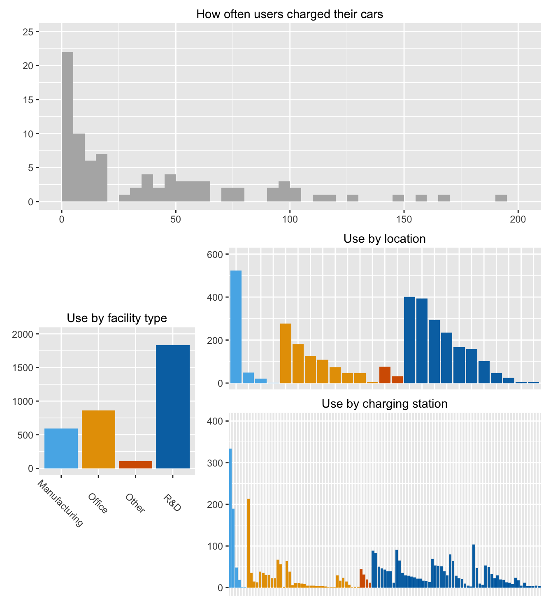
Figure 13.1: Number of chargings carried out by user, by facility type, by location, and by charging station (locations and charging stations are coloured by the type of facility where they were located)
Figure 13.1 is an ensemble of plots summarising some of the data. A few users charged their cars many times. Around half charged their cars hardly at all. There were four types of facility where the stations were installed. Most locations were at R&D facilities as were most stations. One Manufacturing location was used more than any other location. One of the Office charging stations was used far more often than any of the other office charging stations. Some charging stations and even a few locations were hardly used.
Figure 13.2 shows the 25 locations by type of facility and the number of charging stations at each location. The locations have been sorted by facility type and within facility types by numbers of stations.
Code
ex <- unique(ElecCars %>% select(FacilityType, LocationId, StationId)) %>% group_by(FacilityType, LocationId) %>% mutate(nn=n())
ex2 <- unique(ex %>% select(FacilityType, LocationId, nn))
ex3 <- ex2 %>% group_by(FacilityType) %>% arrange(-nn, .by_group=TRUE) %>% ungroup() %>% mutate(ix=seq(1,25), LocId=reorder(LocationId, ix))
ggplot(ex3, aes(LocId, weight=nn, fill=FacilityType)) + geom_bar() + ylab(NULL) + xlab(NULL) + theme(legend.position="bottom", legend.title=element_blank(), axis.text.x=element_blank(), axis.ticks.x=element_blank(), legend.text = element_text(margin = margin(r = 2, unit = 'cm'))) + ylim(0, 15) + scale_fill_manual(values=colblindz)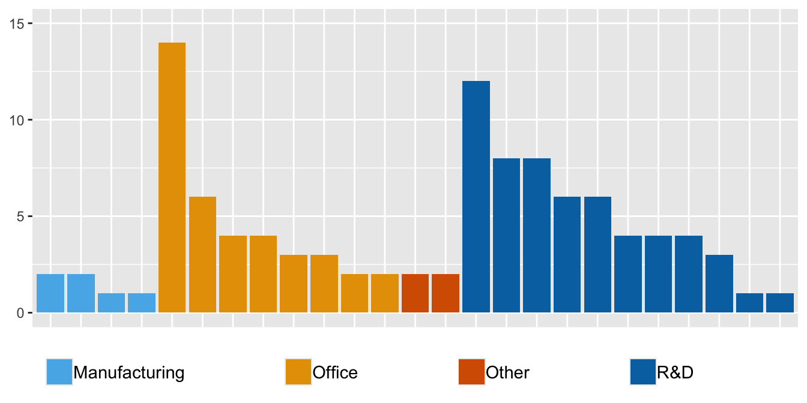
Figure 13.2: Numbers of charging stations by facility type and location
That there are different numbers of locations at the types of facilities may say something about the geographic spread and business of the company. The different numbers of stations at the locations may reflect the numbers of staff.
The numbers of charges over the period of the study are shown in Figure 13.3. The sharp dips are probably at weekends (as will be confirmed by Figure 13.11 later).
Code
ElecCarsDW <- ElecCars %>% group_by(dayD) %>% summarise(UsesD=n())
ggplot(ElecCarsDW, aes(dayD, UsesD)) + geom_line(alpha=0.3) + geom_smooth(se=FALSE, colour="coral", span=0.15) + ylab(NULL) + xlab(NULL) + scale_x_date(breaks = function(x) seq.Date(from = min(x), to = max(x), by = "2 months"), date_labels="%e %b %Y", limits = as.Date(c("2014-11-03","2015-10-13")))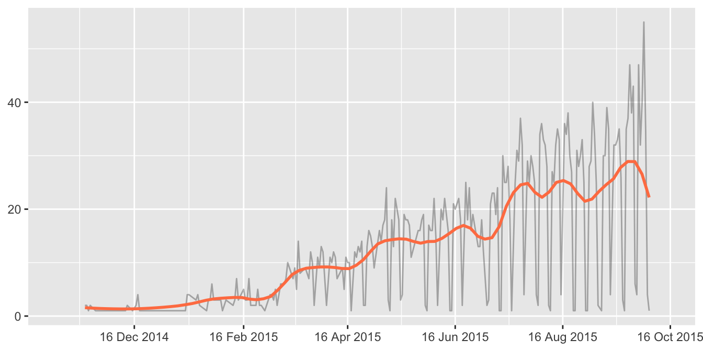
Figure 13.3: Numbers of charges per day with smooth added
The study lasted for a year from mid-November 2014 to early October 2015. The researchers state in their article (Asensio et al. (2021a)) that the first three months were a testing period and that the remaining nine months were the analysis period. Their code (which they provide on the web along with their dataset) shows that the testing period began on 18 November 2014, when the first charging was recorded, and ended on 18 February 2015. Charging facilities were introduced at different locations over time (“The charging stations were installed at a rate of approximately 2 per week”), so not all could be used over the full analysis period. Figure 13.4 displays the cumulative number of charging stations available for each facility type based on the date of first use.
Code
ElecST <- ElecCars %>% group_by(StationId, FacilityType) %>% summarise(Startd=min(dayD)) %>% ungroup() %>% arrange(FacilityType, Startd) %>% group_by(FacilityType) %>% mutate(Number=seq_along(FacilityType))
ES2 <- data.frame(StationId=rep(NA,4), FacilityType=c("Manufacturing", "Office", "R&D", "Other"), Startd=rep(ymd("2015-10-13"), 4), Number=c(6, 38, 57, 4))
ElecST <- rbind(ElecST, ES2)
ggplot(ElecST, aes(Startd, Number, group=FacilityType, colour=FacilityType)) + geom_step() + ylab(NULL) + xlab(NULL) + scale_x_date(breaks = function(x) seq.Date(from = min(x), to = max(x), by = "2 months"), date_labels="%e %b %Y", limits = as.Date(c("2014-11-03","2015-10-13"))) + scale_colour_manual(values=colblindz) + theme(legend.position="bottom", legend.title=element_blank())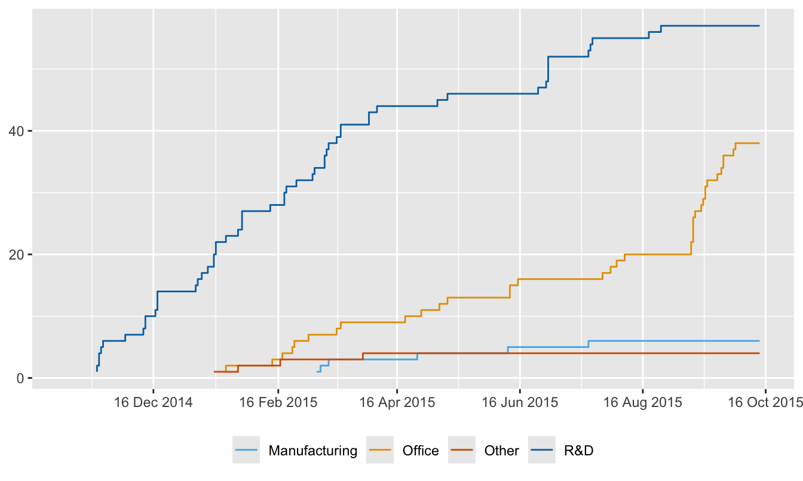
Figure 13.4: Numbers of charging stations by FacilityType over the study
Throughout the study there were always more charging stations available at R&D facilities than elsewhere, mostly a lot more. (This assumes that charging stations were first used immediately after they were installed). Several of the stations at Office locations were only added late on in the study.
Figure 13.5 shows when charging stations were used. This default plot shows little use early on, some charging stations that were used very little (e.g., the two at the top), and a group of chargers that were only used late on in the study (presumably after they were first installed).
Code
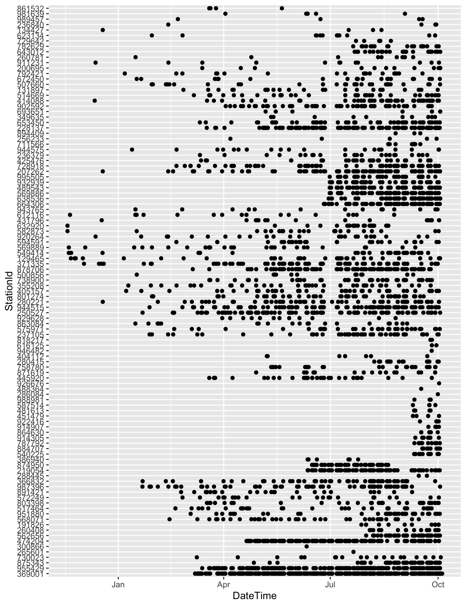
Figure 13.5: When charging stations were used during the study
Patterns of user use are can be seen in Figure 13.6. Most heavy users charge their cars occasionally first and then more regularly.
Code
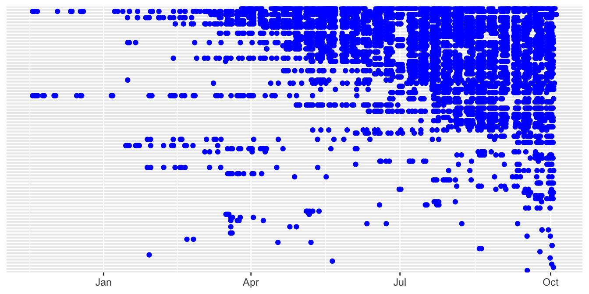
Figure 13.6: When users charged their cars, sorted by number of charges
Figure 13.7 shows an amended version of Figure 13.5. Charging stations are grouped by location. Locations are ordered by first use, as are stations within location. Points are coloured by facility type. Axis labels and individual station labels have been dropped, while location labels have been included. Dates have been made more precise. The time when the test period ended and the analysis period started has been marked in red. The aspect ratio has been increased to make more space for drawing the points for each of the charging stations.
Code
ECL <- ECL %>% mutate(minX=min(DateTime))
ECL <- ECL %>% ungroup() %>% group_by(LocationId) %>% mutate(minY=min(DateTime)) %>% ungroup() %>% mutate(LocationId=fct_rev(fct_reorder(factor(LocationId), minY)))
ECL <- ECL %>% group_by(LocationId) %>% mutate(StationId=fct_reorder(factor(StationId), minX))
ElecSt2 <- ggplot(ECL, aes(dayD, StationId)) + geom_point(aes(colour=FacilityType)) + xlab(NULL) + ylab(NULL) + theme(legend.position="bottom", legend.title=element_blank(), axis.text.y=element_blank(), axis.ticks.y=element_blank(), strip.text.y.right = element_text(angle = 0)) + scale_x_date(breaks = function(x) seq.Date(from = min(x), to = max(x), by = "2 months"), date_labels="%e %b %Y", limits = as.Date(c("2014-11-03","2015-10-13"))) + geom_vline(xintercept=as.Date("2015-02-18"), colour="red", lty="dashed", linewidth=2) + facet_grid(rows=vars(LocationId), scale="free_y", space="free_y") + scale_colour_manual(values=colblindz)
ElecSt2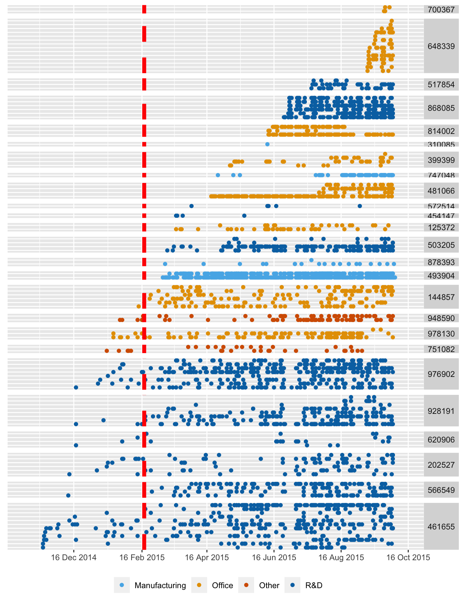
Figure 13.7: Use of charging stations, coloured by facility type, grouped by location, ordered by first installation at location and by first date of use, with the end of testing marked in red
In addition to what could be seen in before, there is now information on locations. Some had few stations and were barely used. Of the two Manufacturing locations, introduced in March after the testing period was over, each with two charging stations, one was heavily used and the other hardly at all. A further Manufacturing location was only used once. The first charging stations were installed at R&D facilities and two of the R&D locations that were introduced later were hardly used. At one Office location one station was little used and two were used more often until one stopped being used. It would be informative to know why some locations and charging stations were much more popular than others.
The analysis period appears to be only seven and a half months, not the nine months reported in the paper. Overall, the lack of balance in the study is surprising. The study environment developed as the study evolved and would have been an influence on drivers’ behaviour. They may have made use of other opportunities to charge their cars, say at home.
13.2 How long does charging cars take?
Charging electric cars can take a long time. Charging was free for up to four hours, after that there was a $1 per hour fee. It was also recommended to staff that they try not to connect for more than two hours at a time. Figure 13.8 shows the distribution of charging times with the two hour and four hour limits marked with dotted red guidelines. One outlying charging time of over 55 hours has been excluded as have 55 sessions with a total charge of zero. Either cars were fully charged within 4 hours or many people did not want to pay any fee. There appears to be no drop at 2 hours. There are a few very short times.
Code
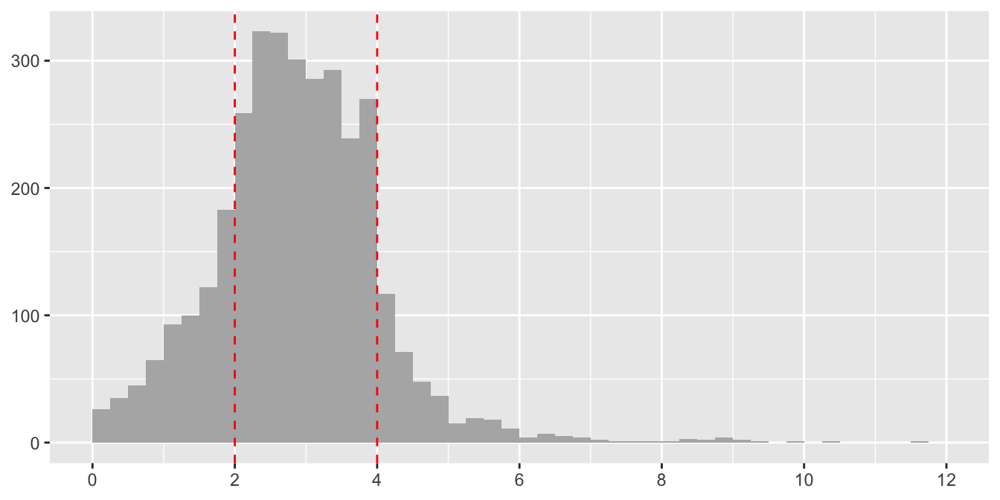
Figure 13.8: Distribution of charging time in hours
Plotting charge against charging time produces a surprising graphic, Figure 13.9. An alpha value of 0.2 has been used (i.e., a point is coloured black where there are at least 5 cases). For a lot of the data there is a rising linear pattern from 0 to 2 hours, which then flattens off. There are plenty of individual values, some where charging has been more effective, some where charging has been less effective, even some where it seems to have barely worked at all. The apparent horizontal boundary across the plot from 2 hours on could be due to cars being completely charged but not having been disconnected from the charger. There are a few cases of high charges in a very short period that might be errors. All but one of the cases above 10 kWh are due to 6 of 85 users, as can be seen in Figure 13.10. Possibly they had bigger cars.
Code
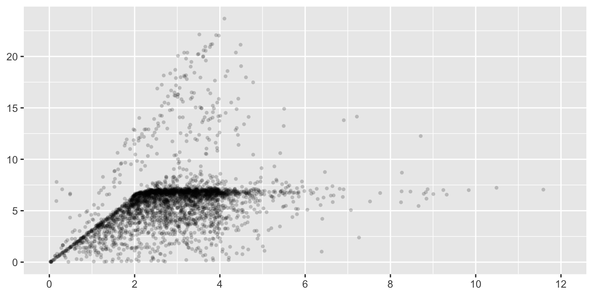
Figure 13.9: Energy charge in kilowatt-hours by charging time in hours
Code
ElecCars <- ElecCars %>% group_by(userId) %>% mutate(useF=n(), UserId=factor(userId)) %>% ungroup()
colblindv <- colorblind_pal()(8)[c(2:6, 7)]
ggplot(ElecCars %>% filter(chargeTimeHrs < 12, kwhTotal>0), aes(chargeTimeHrs, kwhTotal)) + geom_point(alpha=0.2, size=1.5, stroke=0) + ylab(NULL) + xlab(NULL) + scale_x_continuous(breaks=seq(0,12,2), limits=c(0,12)) + geom_point(data=ElecCars %>% filter(kwhTotal > 10), aes(chargeTimeHrs, kwhTotal, colour=UserId)) + scale_colour_manual(values=colblindv) + theme(legend.position="bottom")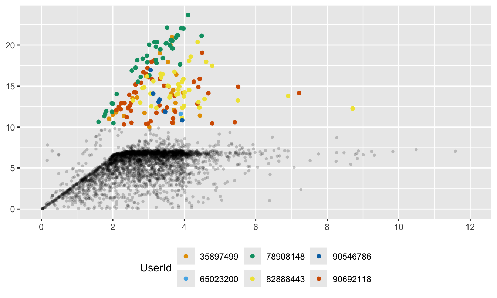
Figure 13.10: Energy charge in kilowatt-hours by charging time in hours, where charges higher than 10 kwh have been coloured by the user ID (charges less than 10 kwh for those users have not been coloured)
13.3 Charging patterns through the week
Figure 13.11 shows how scatterplots of total kilowatt charge by charge times vary by day of the week and type of facility, excluding longer charge times of over six hours and the few sessions at the two ‘Other’ locations.
Code
e5 <- ggplot(ElecCars, aes(Weekday)) + geom_bar(aes(fill=Weekday)) + ylab(NULL) + xlab(NULL) + scale_fill_colorblind() + theme(legend.position="none", plot.title = element_text(hjust = 0.5, vjust=3), axis.ticks.x = element_blank(), axis.text.x=element_blank()) + ggtitle("Number of charges by day of the week") + ylim(0, 800) + facet_wrap(vars(Weekday), nrow=1, scales="free_x")
e7 <- ggplot(ElecCars %>% filter(!facilityType=="4", chargeTimeHrs < 6), aes(chargeTimeHrs, kwhTotal)) + geom_point(aes(colour=Weekday), alpha=0.2) + scale_x_continuous(limits=c(0,6), breaks=c(0, 2, 4, 6)) + facet_grid(cols=vars(Weekday), rows=vars(FacilityType)) + xlab(NULL) + ylab(NULL) + scale_colour_colorblind() + theme(legend.position="none", plot.title = element_text(hjust = 0.5, vjust=3)) + ggtitle("Energy charge in kilowatt-hours by charging time in hours")
e7/e5 + plot_layout(heights=c(4, 1))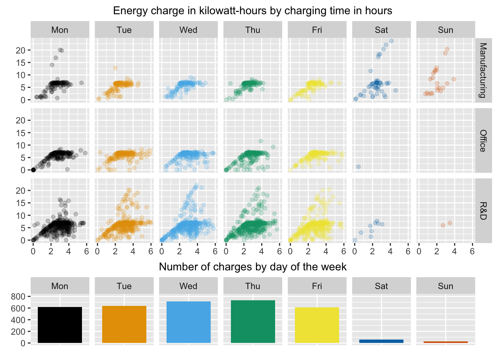
Figure 13.11: Energy charge in kilowatt-hours by charging time in hours, grouped by day of the week and type of facility, excluding charging times over six hours. The barchart shows the number of charges by day.
There were few charging sessions at the weekends. As Figure 13.1 showed, there were more sessions at the R&D locations than elsewhere. The scatterplots suggest some kind of limit at around 7 kWh and the sessions at R&D included a few bigger charges during the week. There seems to be a lower boundary that at least a certain amount of time is needed for a particular charge. The authors of the study omitted 55 charging sessions when no charging took place, even though charge times were not negligible. They did include sessions with very small charges.
Answers About half the users in the study charged their cars rarely, if at all. Cars were seldom charged at weekends. Some charging locations were not used much at all. Users generally charged for less than 4 hours, at which point they had to start paying a fee.
Further questions Do charging patterns change over time? When did users start and stop using chargers during the day? What percentage of time had stations got cars connected to them?